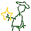
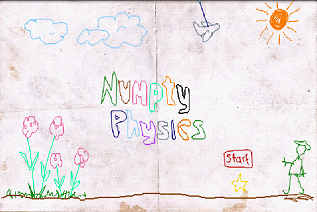
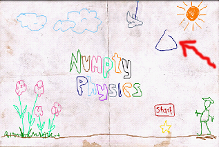
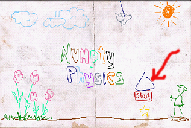

Numpty Physics
is a addictive and challenging drawing puzzle game.
It is a 2D physics puzzle / sandbox game, in which you get to experience what it would be like if your drawings would be magically transformed into real physical objects. Solve puzzles with your artistic vision and creative use of physics. The very similar game Crayon Physics(Sell $19.95) using the same excellent Box2D engine is sold $19.95.
It is also the famous and winner game of IGF in 2008.
Goal
Let the red ball and yellow ball meet together.
| hand draw on screen | draw a new stroke |
| space or enter (d-pad centre) | pause/unpause physics |
| esc (back arrow) | undo last stroke |
| q | quit |
| r or up | reset level to initial state |
| n or right | skip to next level |
| p or left | go to previous level |
Hints:
Each stroke is like a rigid piece of wire with a mass proportional to its length. A closed stroke is just a wire bent into a shape, it has no substance apart from its perimeter.
The ends of a strokes can (and will) join onto other strokes when drawn near enough to another stroke. These joints are pivots so you can use this to build levers, pendulums and other mechanical wonders.
Jointed strokes don't collide with each other. Join both ends to make a rigid structure
Quick start
Level-START

Draw a triangle above the RED "start"

The triangle drops and hits the red "start" and then the red "start" hits the yellow "star".

Mission completed.